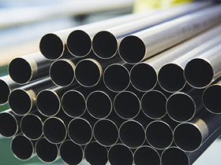

ASTM B619 Hastelloy C276 Capillary Pipe in India | Hastelloy C276 Capillary Pipe & Capillary Tube | Hastelloy C276 Seamless Pipe | Hastelloy C276 Welded Pipe | Hastelloy C276 Seamless Mechanical Tubing | Hastelloy C276 For Hydraulic Control Lines | Hastelloy C276 Coil Tubing | Hastelloy C276 Semi Seamless Capillary Tubes | Hastelloy C276 ERW Capillary Tube | Hastelloy C276 Welded Capillary Tubes | Hastelloy C276 EFW Capillary Tubes | Hastelloy C276 Pipe | Hastelloy C276 Capillary Tube | Hastelloy C276 Tubing
Are you searching for UNS N10276 Seamless Pipes & Tubes, we spent our significant time in ASTM B622 Hastelloy C276 Capillary Pipe since 1975. Offer amazing costs joining substantial rebates against a scope of Hastelloy C276 review Seamless Pipe, Hastelloy C276 SCH 40 Pipe, Hastelloy C276 SCH 80 Pipe, Hastelloy C276 Capillary Tubes For Medical Devices, Hastelloy C276 Electropolished Capillary Tubes Products in India
Metal Ministry Inc. is a known provider and produce where it offers an across the board exhibit of Hastelloy C276 Capillary Pipes and Tubes, which can work from temperatures up to 400 Degree C. Like other related nickel combinations, these Hastelloy C276 EFW Pipes is yielding, crease and impassive to shape, together with holds astounding showdown to SCC in chloride - bearing arrangements that are a strategy of hardship to which the austenitic compounds is inclined. Our Hastelloy C276 Seamless Tubes has counterattacked the development of grain limit rushes in the weld warm - overstated zone, building it a candidate for most petrochemical and substance handling utilizes as a part of the as - patched frame.
Low carbon content in these Hastelloy C276 Seamless Pipes decreases carbide precipitation over the span of welding. Our Nickel-Alloy C276 Tubes has remarkable encounter to setting, SCC and cleft consumption. Various fundamental characteristics of these Hastelloy-Alloy C276 Pipes contain its contention to oxidizers, for example, Acids, Hypochlorite, Chlorine dioxide and that's only the tip of the iceberg. Our Alloy C276 Tubes too has remarkable showdown to setting, SCC and rusting conditions up to 1900 Deg F. At the point when the premonition and the expanding costs of modern are well – thought – out, these Alloy C276 Pipes can by and large offer the customer a speedily possible and more cost - compelling alternative. In spite of the way that there are various variations of Hastelloy items, these Hastelloy C276 Tubes unquestionably the most widely utilized.
Our products are produced using predominant quality Raw Material and are accessible in Customized Designs to suit diverse necessities of the customers. Our contemporary innovation and steady endeavors to get new abilities to improve generation is the mystery of our prosperity and faultless quality.
- Electronic Industries
- Chemical Industries
- Soap Industries
- Aerospace Industries
- Food Industries
- Fabrication Industries
- Cement Industries
- Sugar Industries
- Power Plant
- Steel Plant
| Standard | ASTM, ASME B 622, B 619, B 775, B 516, B 626 |
| Size | 15NB TO 150 NB IN |
| Grade |
|
| Type | Seamless / ERW / Welded / Fabricated / LSAW Pipes |
| Form | Round, Square, Rectangular, Hydraulic Etc. |
| End | Plain End, Bevelled End, Treaded |
| Length | Single Random, Double Ranidom & Cut Length |
| STANDARD | WERKSTOFF NR. | UNS | JIS | BS | GOST | EN | OR |
| Hastelloy C276 | 2.4819 | N10276 | NW 0276 | – | ХН65МВУ | NiMo16Cr15W | ЭП760 |
|
Carbon
|
0.01 max
|
| Chromium | 14.5 – 16.5 |
| Cobalt | 2.5 max |
| Iron | 4 – 7 |
| Manganese | 1 max |
| Molybdenum | 15 – 17 |
| Phosphorus | 0.015 max |
| Silicon | 0.08 max |
| Sulphur | 0.01 max |
| Tungsten | 3 – 4.5 |
| Vanadium | 0.35 max |
| Nickel | Balance |
| Density | Melting Point | Tensile Strength | Yield Strength (0.2%Offset) | Elongation |
| 8.89 g/cm3 | 1370 °C (2550 °F) | Psi – 1,15,000 , MPa –790 | Psi – 52,000 , MPa – 355 | 40 % |
| • | ASTM B 619 / 622 Hastelloy C276 Pipes & Tubes |
| • | ASTM B 619 / 622 Hastelloy C276 Seamless Pipes & Tubes |
| • | ASTM B 619 / 622 Hastelloy C276 Welded Pipes & Tubes |
| • | Hastelloy C276(UNS No. N10276) Seamless Pipes & Tubes |
| • | Hastelloy C276(UNS No. N10276) Welded Pipes & Tubes |
| • | Hastelloy C276 Capillary Pipes |
| • | Hastelloy C276 Capillary Tubes |
Metal Ministry Inc. Supplies Hastelloy C276 Capillary Pipes & Tubes in Agartala, Agra, Agra Rampur, Ahmedabad, Aizawl, Ajmer, Aligarh, Allahabad, Alwar, Amaravati, Ambala, Ambattur, Ambernath, Amravati, Amritsar, Aurangabad, Bangalore, Bareilly, Belgaum, Bhagalpur, Bhavnagar, Bhilai, Bhiwandi, Bhopal, Bhubaneswar, Bidhannagar, Biharsharif, Bikaner, Bilaspur, Bokaro, Chandigarh, Chennai, Chittoor, Coimbatore, Cuttack, Dahod, Davanegere, Dehradun, Delhi, Dhanbad, Dharamsala, Dindigul, Diu, Durgapur, Erode, Faridabad, Fatehpur, Gandhidham, Gandhinagar, Ghaziabad, Greater Hyderabad, Greater Mumbai, Greater Warangal, Gurgaon, Guwahati, Gwalior, Haldia, Howrah, Hubballi-Dharwad, Hyderabad, Imphal, Indore, Jabalpur, Jaipur, Jalandhar, Jammu, Jamnagar, Jamshedpur, Jhansi, Jodhpur, Junagadh, Kakinada, Kalyan-Dombivali, Kanpur, Karnal, Kavaratti, Kochi, Kohima, Kolhapur, Kolkata, Kota, Lucknow, Ludhiana, Madurai, Mehsana, Mangalore, Mangaluru, Mira-Bhayandar, Moradabad, Morbi, Mumbai, Muzaffarpur, Mysore, Nagpur, Namchi, Nasik, Navi Mumbai, NDMC, Nellore, New Delhi, New Town Kolkata, Noida, Oulgaret, Pali, Panaji, Panipat, Panvel, Pasighat, Patiala, Patna, Pimpri-Chinchwad, Port Blair, Puducherry, Pune, Raipur, Rajkot, Ranchi, Raurkela, Industrial Township, Rourkela, Sagar, Salem, Satna, Secunderabad, Shaharanpur, Shillong, Siliguri, Silvassa, Solapur, Srinagar, Surat, Thane, Thanjavur, Thiruvananthapuram, Thoothukudi, Thrissur, Tiruchirapalli, Tirunelveli, Tirupur, Tumkur, Udaipur, Ujjain, Ulhasnagar, Vadodara, Vapi, Varanasi, Vasai-Virar, Vellore, Vishakhapatnam.
Metal Ministry Inc. exports Hastelloy C276 Capillary Pipes & Tubes to Countries like India, United States, United Arab Emirates, Canada, Pakistan, Peru, Chile, Spain, France, United Kingdom, Indonesia, Israel, Iran, Kuwait, Mexico, Malaysia, Nigeria, Serbia, Singapore, Taiwan, Chile, Venezuela, Ecuador, Saudi Arabia, Netherlands, Brazil, Colombia, Ghana, Iran, Denmark, Poland, Australia, Afghanistan, Bahrain, Costa Rica, Egypt, Iraq, Jordan, South Korea, Kazakhstan, Sri Lanka, Lithuania, Norway, Oman, Philippines, Poland, Qatar, Russia, Vietnam, South Africa, Nigeria, Mexico, Turkey, Hungary, Algeria, Angola, Argentina, Austria, Azerbaijan, Bangladesh, Belarus, Belgium, Bhutan, Bolivia, Bulgaria, Croatia, Czech Republic, Estonia, Finland, Greece, Italy, Japan, Libya, Romania, Thailand, Trinidad & Tobago,Tunisia, Ukraine, Yemen, Hong Kong, Gabon, China, Portugal, Switzerland, New Zealand, Sweden, Slovakia, Kenya, Lebanon, Morocco, Mongolia.